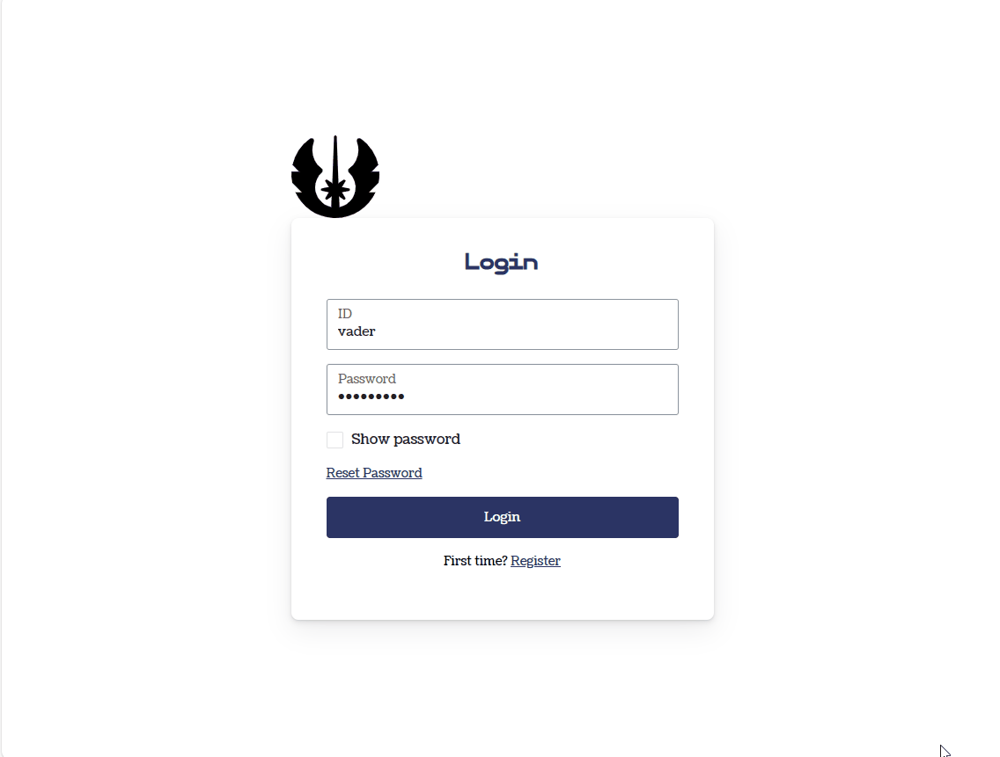

Shiny as a novel assessment tool for pilots in training
ShinyConf 2024
Presage Group
Canadian scientific consulting firm specializing in human behavior in the airline industry
Learn more: https://presagegroup.com/
Analytics Team

Randall Boyes (Director of Analytics)

Amy Ecclestone (Junior Data Analyst)

Brooke Linden (Director of Research)

Umair Durrani (Junior Data Scientist)
Challenges in Flight Safety

Accidents directly caused by pilot errors account for about 70% of the total accidents
Sources: Unstable approach; Statistics
Project Overview
A novel assessment tool to optimize learning opportunities and performance outcomes for trainee pilots.
- Improve flight safety for millions of air travelers every year
Required Features
- Online, fast and reliable
- Take data from student pilots
- Personal dashboard for students
- Separate student and instructor user interfaces
- Accessible on desktop, iPad and cellphone
Development Questions
- What framework to use? shiny, shinyMobile, golem, rhino
- How to store and retrieve data? Relational, NoSQL
- How to aggregate data on schedule?
- Authentication shinymanager, shinyuser, firebase, polished, etc.
- Aesthetics
Development Questions
- What framework to use? shiny with {golem}
- How to store and retrieve data? Firestore with in-house {frstore} made with {httr2}
- How to aggregate data on schedule? GitHub Actions
- Authentication Firebase with {frbs}
- Aesthetics {bslib} - responsive design
Quick Demo
Let’s build an example app
Firebase Project
Firebase Project
Firebase Project
In your .Renviron file:
Authentication
{firebase} is great but with limited UI customization
Authentication
Requirement: Register and sign in with ID instead of email
- Not possible with {firebase}
Authentication
Meet a new package {frbs} by Kennedy Mwavu
Useful functions:
frbs_sign_up(email, password)
frbs_sign_in(email, password)
Authentication
Customize UI as you like. For example, {frbs-examples} also by Kennedy Mwavu:
Authentication
With bslib::bs_theme:
Authentication
- Check if the ID matches with student/instructor email
- Launch the corresponding UI
Authentication
Student UI
Instructor UI
Database Operations
Cloud Firestore is a scalable NoSQL database
- No official client library for R 😔
Database Operations
We developed our own
- Create, read, update, and delete operations via REST API
- {httr2}
frstore_create_document
frstore_patch
frstore_get
Database Read example
Database Write example
Database Read example
Aggregating data on schedule
Requirement: Compare a pilot with average pilot
Example: Average skill by homeworld and starships:
Aggregating data on schedule
GitHub actions
on:
workflow_dispatch:
schedule:
- cron: "00 00 * * *"
name: calculate average
jobs:
run-r-script:
runs-on: ubuntu-latest
env:
FIREBASE_PROJECT_ID: ${{ secrets.FIREBASE_PROJECT_ID }}
FIREBASE_API_KEY: ${{ secrets.FIREBASE_API_KEY }}
PASSWORD: ${{ secrets.PASSWORD }}
GH_PAT: ${{ secrets.GH_PAT }} # Add the GitHub PAT secret
steps:
- uses: actions/checkout@v3
- uses: r-lib/actions/setup-r@v2
with:
use-public-rspm: true
- uses: r-lib/actions/setup-r-dependencies@v2
with:
cache-version: 2
packages:
any::remotes
- name: Install R packages
run: |
Rscript -e 'remotes::install_version("dplyr", version = "1.1.4")'
Rscript -e 'remotes::install_version("jsonlite", version = "1.8.7")'
Rscript -e 'remotes::install_version("httr2", version = "1.0.0")'
Rscript -e 'remotes::install_version("tidyr", version = "1.3.1")'
Rscript -e 'remotes::install_version("stringr", version = "1.5.1")'
Rscript -e 'remotes::install_version("lubridate", version = "1.9.3")'
Rscript -e 'remotes::install_version("purrr", version = "1.0.2")'
Rscript -e 'remotes::install_version("tibble", version = "3.2.1")'
Rscript -e 'remotes::install_github("kennedymwavu/frbs", auth_token = Sys.getenv("GH_PAT"))'
- name: run-script
run: Rscript process_data_to_create_averages.RAesthetics
{bslib} makes UI customization easy
In Conclusion:
✅ Online, fast and reliable
✅ Take data from student pilots
✅ Personal dashboard for students
✅ Separate student and instructor user interfaces
✅ Accessible on desktop, iPad and cellphone